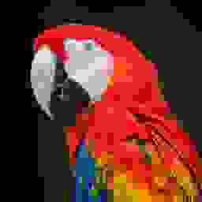

nothing is gone.
only the air between.
image: ai-generated (gpt-image-2)
why anything compresses at all
the information stays. the description gets shorter.
you have seen this before
the frequent one gets the short code. now with a recipe.
trick one: point back
say it once. then say where it was.
the same trick on a picture: run length
the bigger the areas, the more it saves.
run length: the bad case
every method makes some files bigger. yours too.
trick two: count first
the same code for every letter: the a pays as much as the d.
build the tree
always join the two rarest. that is the whole algorithm.
huffman, 1952
read the codes off the tree
23 bits instead of 33. nothing lost.
why it reads itself
no code is the start of another. the prefix trap from
code systems
, avoided by construction.
and that is a zip
every zip you ever opened did these two tricks. nothing else.
measured with python's zipfile, level 9, 13 sept 2026
and that is not bad luck
no method shrinks everything. counting says so.
the parrot, honestly
lossless gets you to half. you need a fiftieth.
the same parrot, four times
png · 93 107 bytes
lossless
jpg · 10 587 bytes
quality 75
jpg · 3 081 bytes
quality 10
jpg · 2 032 bytes
128 × 128 points, quality 25
still a parrot. and now it fits.
real files, sizes as measured · image: ai-generated (gpt-image-2)
two roads to 2 kb

256 × 256 · quality 1 · 1 925 bytes
all the points, each one coarse
128 × 128 · quality 25 · 2 032 bytes
a quarter of the points, each one clean
fewer points, or coarser points.
analog and digital
, from the other side.
a one-way street
lossless: unpack, and you hold the original
lossy: unpack, and you hold something that looks like it
from the 2 kb parrot, the 93 kb never come back.
lossless or lossy
must exactly this file arrive? then lossy is out.
must a presentable picture arrive? then it is your strongest lever.
the task decides, not the tool. and ask before you spend an hour optimising.
the receiver has to know
which method
which settings
written into the specification, next to preamble and character code
packed data does not explain itself.
today
1 zip three files of your own and explain the three ratios
2 bring the parrot under 2 kb, and write down what you gave up
3 put method and settings into your specification
two kilobytes.
still a parrot.
photo: parrot, 128 × 128 points, 2 032 bytes, shown point for point · image: ai-generated (gpt-image-2)